How Anamorph fakes
A Penrose triangle that is a real object: matte painted wood, lit by a soft studio key, casting shadows on itself. It is cut along one line of sight and its pieces are pushed apart in depth, so it only closes from one place. Here is how 31 such figures are built, how they split into blocks that march around the loop, how they stay welded in perspective, how they shadow themselves as if they were possible, and how the camera finds the one viewpoint where they are.
See it live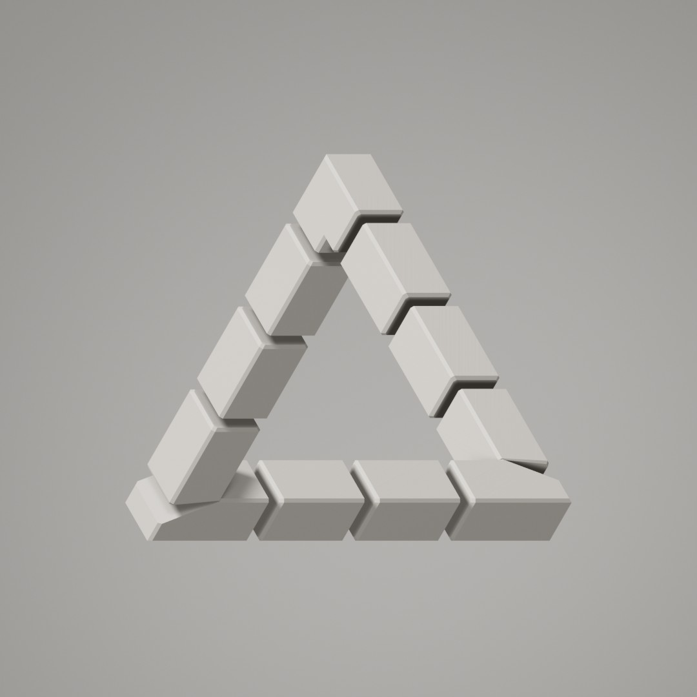
An impossible object you could build
Impossible figures are drawings: a Penrose triangle, an Escher cube, Reutersvärd's cubes. Each one is locally fine, a beam meeting a beam at a right angle, and globally contradictory: follow the loop and you come back in front of where you started. There is a classic way to build one anyway. Make the solid open, with one end far in front of the other, and stand where the two ends line up. From that one viewpoint the gap is hidden behind itself and the eye closes the loop. This is an anamorphosis: a picture that only resolves from one place.
The day builds every figure that way, as a real solid, and then makes the trick its subject. Each figure flies in on a long orbit and is seen from the side, where it makes no sense; the camera brakes into the sweet spot, the pieces lock together with a wooden click, and the figure breaks into blocks that march around the impossible loop. Then the blocks close up, the figure fades into the backdrop, and the next one swings in.
The aim is a product shot, not a diagram: matte off-white paint over wood with brush lines in it, soft chamfered edges, a single soft key and soft shadows. That last part is the hard one, because a real shadow would give the trick away, so the figures cast shadows from the shape you see, not from the shape that is there.
√3 · L = 4.59 nearer the camera than the piece before it.All thirty-one
Every figure whole, from its sweet spot. Hover or tap one to see it split into its marching blocks, or split them all; the Escher cube and the chair always stay whole.
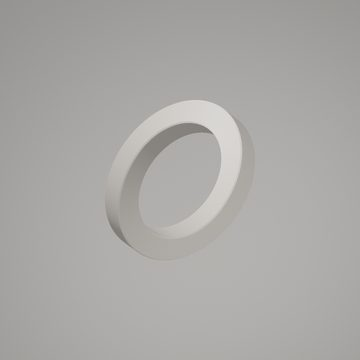
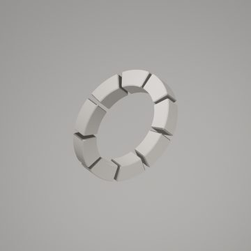
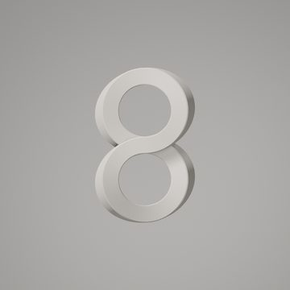
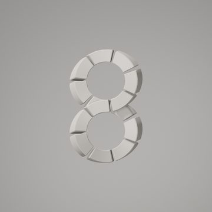
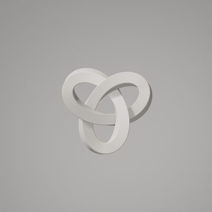
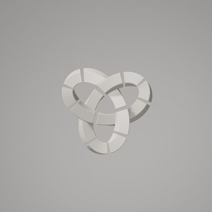
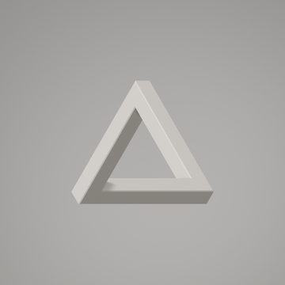
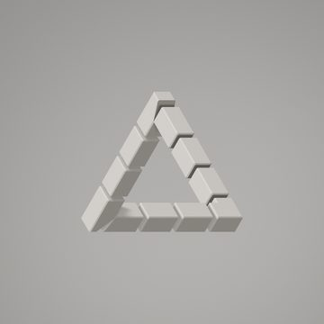
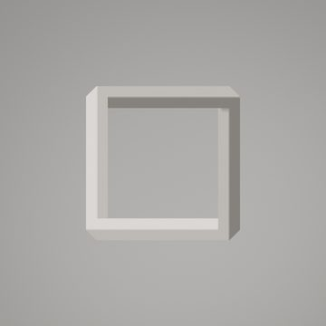
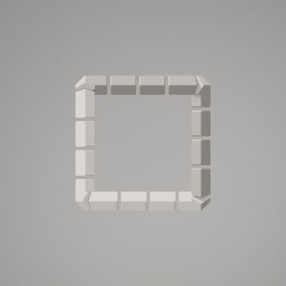
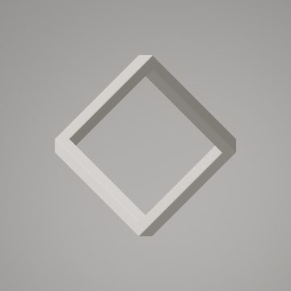
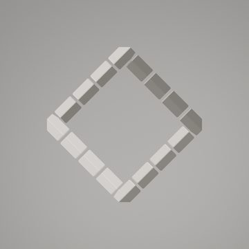
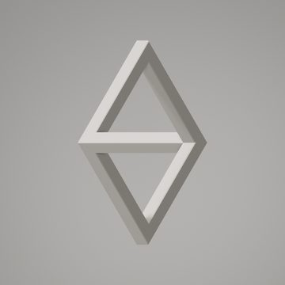
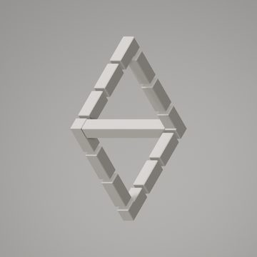
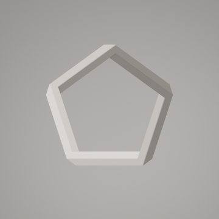
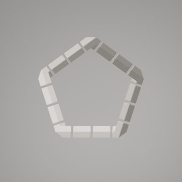
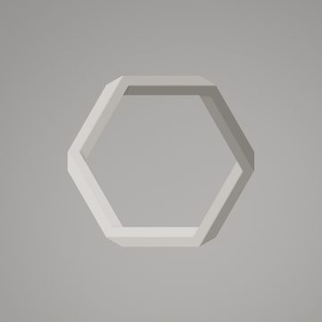
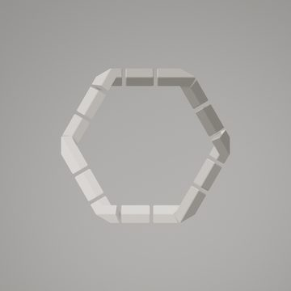
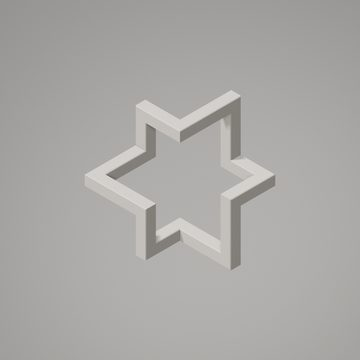
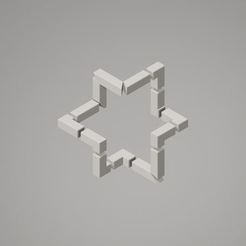
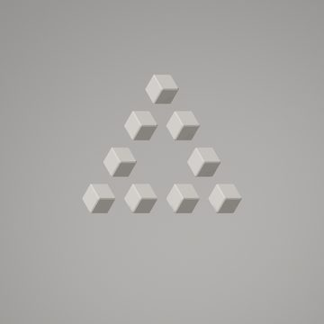
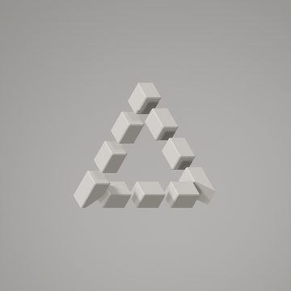
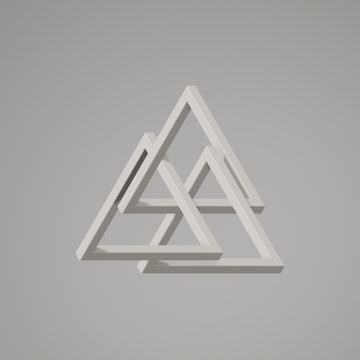
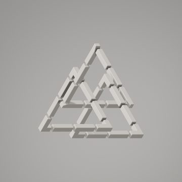
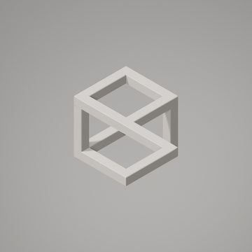
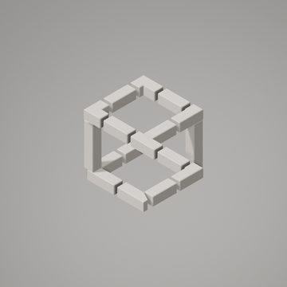
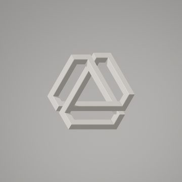
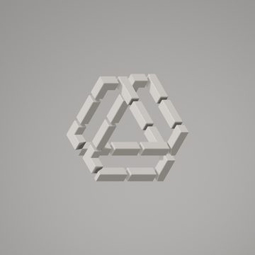
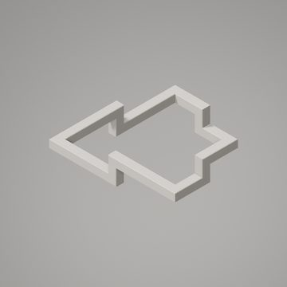
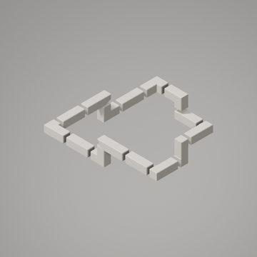
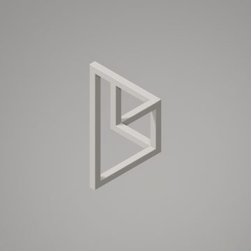
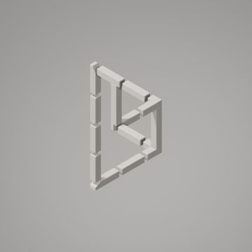
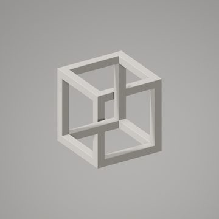
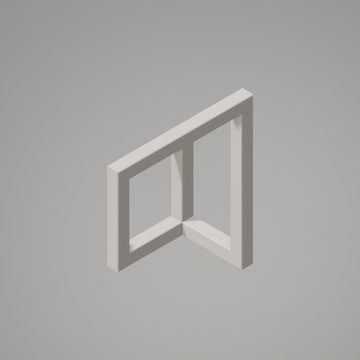
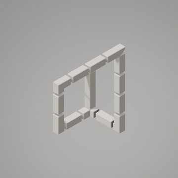
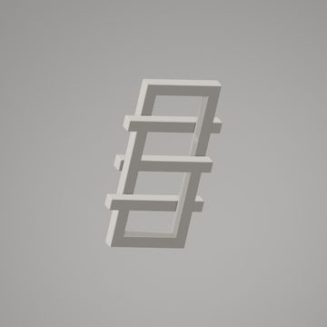
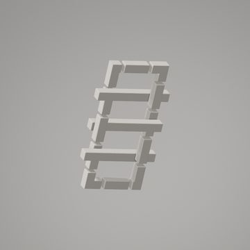
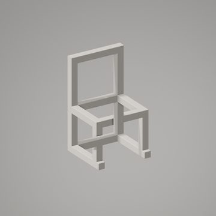
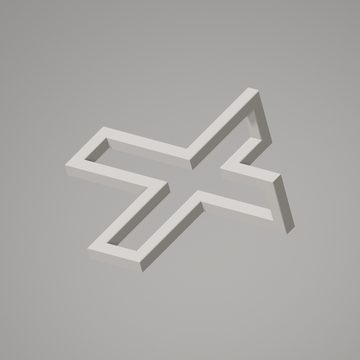
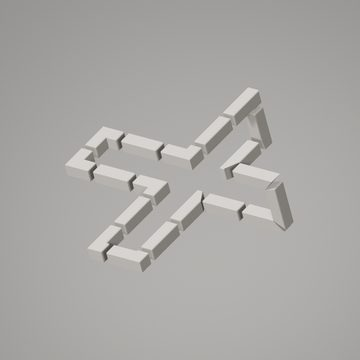
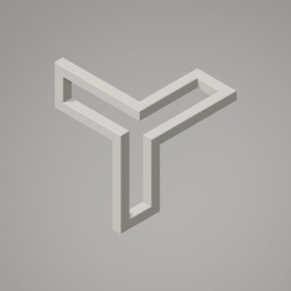
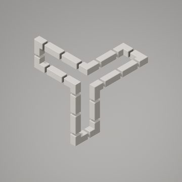
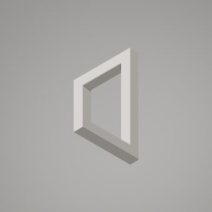
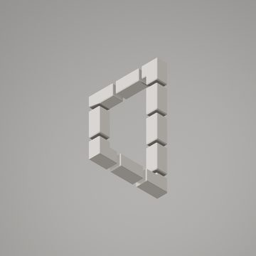
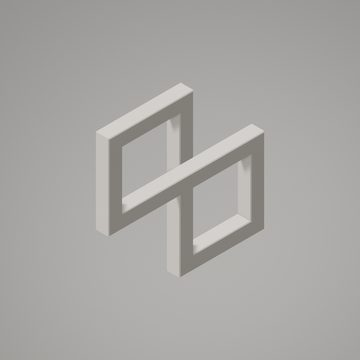
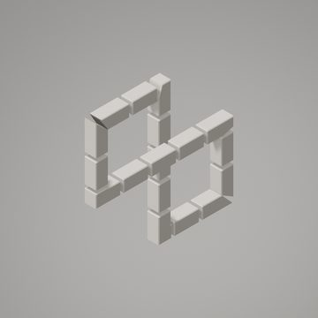
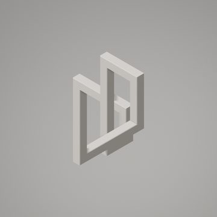
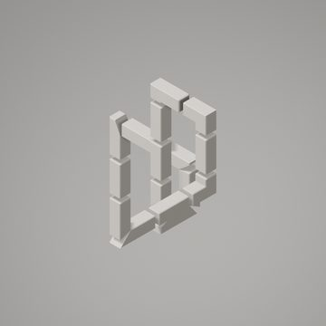
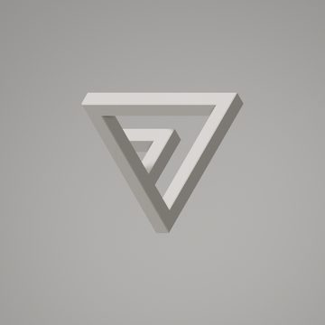
Cut along the line of sight
The sweet spot looks straight down −z: the camera is on the +z axis, at 12 units in orthographic mode, framing 4.3 units of height. Every figure is built in that frame. A portal is a point on a loop where it is cut by a plane that contains the line of sight: the plane is vertical in z, and across the beam on screen (its normal is the beam's screen direction, with no z). Everything past the cut is then moved along z by a jump jz. Since the move is along the line of sight and the cut plane contains it, the two faces of the cut project onto exactly the same outline on screen: from the sweet spot there is nothing to see, and the beam looks whole.
A Penrose triangle is three beams along three axes of a cube, at right angles to each other in 3D. Seen in isometric projection each axis drops away from the camera by the same amount, so walking around the three beams, each of length L, ends √3 · L further back than it started, right behind the start on screen. One portal halfway along the first beam with jz = √3 · L pays that depth back. The solid is then a single bent bar whose two ends meet on screen and are 4.59 units apart in depth at the default size (L = 2.55 × radius 1.04 = 2.65).
The triangle, off its sweet spot
The same basis, lengths and cut as buildTriangle: three square beams of half-width 0.185 on the isometric lattice, cut halfway along the bottom beam. Right, from above: the two ends of the cut are on one sightline at 0°. Orbit and they slide apart on screen by jz · sin θ; the readout also gives what the day does to its shadows at that angle.
Cuts sit on straight runs of beam, between corners, and where no other beam crosses in front of them on screen. Some figures need several: the S-hook and the hexagon-cross have two, the triquetra, pinwheel and hooked tribar three, the double tribar three per triangle. Their jumps can be in either direction; the S-hook's cancel each other out (+1.6·arm, then −1.6·arm).
Thirty-one figures on a cube lattice
Most figures are straight beams along the three axes of a cube, drawn in isometric: the axes are turned 45° about the vertical and pitched by the isometric angle, 35.26°, so each one drops away from the camera by the same amount and one step along all three lands straight behind where it started. A loop is a list of bars and cuts; the beam's square section, an octagon with the chamfer of 0.1, is carried round every 90° corner with a mitre so it never twists, and the loop position s runs by length from the first cut, from 0 to 1.
| family | figures | built as |
|---|---|---|
| Curved ribbons (3) | ring, figure-8, trefoil | Smooth curves with a rectangular section. The ring is two half-tori tilted 45°, the second turned 180° about the line of sight, cut at s = 0 and 0.5. The figure-8 (after Fernando Cortell) has one cut at its top and its side walls flip across the waist; the trefoil is a torus-knot ribbon with three cuts. |
| Penrose polygons (4) | square, diamond, pentagon, hexagon | An N-sided loop of flat rhombus prisms with CN symmetry, each bar's inner front face continuing into the next bar's bevel around every corner; one cut. |
| Lattice loops (12) | triangle, frame, s-hook, triquetra, hourglass, stairs, meander, cross, pinwheel, star, hooked-tribar, reutersvard | One closed loop of beams on the cube lattice: 3 bars (triangle) up to 12 (stairs, cross, star, hooked tribar). The self-crossing ones (s-hook, triquetra, hourglass, meander, hooked tribar) pass over themselves. Reutersvärd's figure is nine floating cubes while whole and a tribar of blocks while it marches. |
| Interlocked loops (4) | double-tribar, valknut, borromean, borromean-tribar | Two or three loops that pass over and under each other: two Penrose triangles in a star of David, Odin's three triangles, three golden frames, and three square plates with round-cornered holes. |
| Loops with open paths (6) | divided-diamond, spiral-tribar, hex-cross, waterfall, archway, ladder | A loop plus open beams welded onto it: a spine through a rhombus, an inner spiral arm, two rear pillars, Escher's waterfall towers, a viaduct's middle column, a ladder's three rungs that change sides. |
| Pillar figures (2) | escher-cube, chair | Built from square frames and open pillars, some pillars cut twice so their middle sits in front of or behind a crossing beam. They never split: 6 and 7 pieces that only make sense whole. |
Two families need more than bars. The valknut's three triangles lie across each other, so a cut halfway along a beam could land under another triangle; each triangle's cut is placed by search instead, at the point of its outline farthest from every other bar on screen. The borromean tribar's three plates have rims of constant width around their round-cornered holes, and s runs by arc length along the middle of the band, so equal steps make equal blocks.
Prisms, cut in two
The meshes are rebuilt on the CPU every frame the figure changes, into buffers allocated once. A piece of loop becomes a prism: rings of 4 or 8 corners at every corner, hinge and bevel boundary, joined by walls with exact normals. Each vertex also carries its sweet-spot position and normal and a tag (loop, bar, s, portal depth), which the paint and the shadows run on. Block ends are bevelled at 45°, sized on the whole block so a block cut at a portal keeps one taper through the cut, and the bevel grows with its gap.
A block that straddles a cut is built once as an unbroken prism and clipped against the cut's plane twice, one half kept and the other moved by jz, so both halves share one outline on screen. Vertices far along the loop are forced to their own side so a beam turning back past the cut isn't sliced too, but they keep their true distance to the plane, so the cut stays straight. From the sweet spot the cut faces can't be seen and aren't drawn; off it they are capped.
Blocks on a conveyor
Each loop gets as many blocks as make them Block length × 0.28 long on screen (0.62 at the default), preferring a multiple of its corners when that stays within 12%: the triangle gets 11. The loop is a conveyor of n blocks and n gaps, and a phase moving at 0.07 loops a second shifts them all; a block crossing a cut is clipped in two there and, from the sweet spot, just slides through it. Open paths, a ladder's rungs or the waterfall's towers, stay whole while the loops march.
The split is one number rising from 0 to 1 over 4 s once the camera settles, and falling back before the figure leaves. Each gap opens after a delay set by the split style: all at once (together, fast at first, since a narrow slot is the hardest thing to shadow), one after another (wave, and slide, where the block behind falls back), every other one first (alternate), by halving the loop (halving), outward from the cuts (joins) or both ways from one point.
Gaps opening around a loop
The loop unrolled onto a circle, starting at its cut (top). Each block is an arc; on the right, each gap's delay (tick) and how far it is open (bar). Play runs the split over 4 s as the day does, then lets the blocks march at 0.07 loops a second. A gap counts as open for the sound once it passes 0.12.
Paint, light and perspective
The paint has no textures. It runs in loop coordinates, so it rides with a marching block and continues across a closed seam: a slow drift of tone at ±1.2%, and long brush lines, 55 to the unit across the beam and wobbled so they never line up, which barely touch the colour and mostly show in the roughness, as a satin finish does, with a faint bump on the normal.
The figures render through the shared photographic pipeline, matte off-white (#e4ddd0) under a soft key from the upper left in a warm grey studio, with its shadow maps and screen-space AO and GI turned off: both see the real depth, which is wrong at every cut. The traced shadows below replace them.
The figures are built for orthographic projection, the default. In perspective (O), every vertex is moved by a projective transform, (x, y, z) → D / (D + κz) · (x, y, κz), that keeps lines straight and lands each point on the pixel the orthographic view would, so the figure still welds from the sweet spot.
Shadows from the shape you see
An impossible figure, if it existed, would shadow itself consistently. The real solid can't, because its beams aren't where they appear to be. So the shadows are traced per pixel in illusion space, where every piece sits where it seems to be from the sweet spot. Each frame the figure is described as up to 220 boxes, one per straight run or block, and each pixel traces the key light and a short ambient ray against them, with a penumbra that widens with distance.
Within one loop the cut depths are taken back out, so the loop becomes an endless spiral that never closes, and a box is placed on the receiver's own turn of it: the beam half a loop ahead and half a loop behind sits where the eye believes it is. Boxes from other loops, or crossing over, are lifted to just above the receiver. Curved figures and the borromean tribar's plates are traced against their exact shapes.
The triangle, unwound
Depth along the loop for the default triangle (z toward the camera). The real solid drops 4.59 per lap and jumps forward at the cut, a sawtooth. The receiver sees blockers on the straight line through itself, half a loop either way, fading over 0.38 to 0.48: near its end of the loop, blocks just past the cut are placed a full lap lower than they really are.
Those shadows only match the picture near the sweet spot, so they fade out as the camera leaves it, between 3° and 15°. Further out the figure is lit without them, which reads as an unshadowed object rather than a wrong one.
Orbit, click, split, leave
Every figure plays the same phases. It grows in over 0.6 s while the camera swings 2.2 turns around it in 7 s, seeing the impossible figure from every side as the nonsense it really is. It lands on the sweet spot with a click, splits and marches, and when the next figure is asked for, it closes up, grows slightly and fades into exactly the backdrop behind it.
The camera doesn't follow an easing curve, which would stop dead. A guide path brakes into the sweet spot, and an under-damped spring (ω = 7, ζ = 0.7) chases it, rounding off the start and gliding in; once it has settled it is pinned exactly. While a figure is on screen the camera sways about the line of sight, ±14° over 14 s, passing upright as it lands: a roll about the sightline keeps the figure welded.
Landing on the sweet spot
The yaw of one orbit, simulated with the day's code at 60 fps (4 spring substeps a frame). Top, the whole swing; bottom, the landing magnified, with the moment the camera comes within 0.12° (the click) and the moment it is pinned. ω and ζ are fixed in the day; the sliders show what they do. Shorten the orbit to see the spring overshoot.
Dragging breaks the illusion: a few degrees off, the cut ends step apart; further, the figure falls into its real, open shape. Letting go eases back to the sweet spot, keeping your zoom. Near the sweet spot a hand-placed camera is never quite on the axis, so the figure turns to meet it, fully within 2.5° and not at all past 7°.
Air, a click and wooden blocks
Each orbit sets off with a deep whoosh, under a synthesized swoosh that follows how fast the camera swings: looping pink noise through a low body, a band that sweeps up and flutters, and high air, panned with the camera. The landing is a single wooden click, played when the pieces come within a pixel of each other. Every gap that opens or closes knocks one of three hits cut from a recording of toy wooden blocks, lower when closing, so together makes a burst and wave a run around the loop. All of it goes through a short generated room reverb.
Controls
- Drag to orbit and break the illusion, scroll or pinch to zoom. Letting go eases back to the sweet spot; L does it any time.
- R (or the dice) for a new figure; [ and ] step through the 31 in order.
- S toggles the blocks, E the ink outlines, O orthographic / perspective.
- Geometry: figure, randomize pool, split style, block length (1.2–4), gap (0.07–0.45), radius, thickness, chamfer (0–0.45).
- Motion & View: projection, FOV (28–70°), march speed, camera sway (0–30°), reverse, auto-snap.
- Look: painted, dark, studio or wireframe, the shadow strength and the outlines. Transition: grow in, orbit, split / merge and exit times.
- M or the speaker button toggles sound, Space pauses, F goes fullscreen, Tab hides the panel.
- Left alone, it changes figure every 14 s (Auto change).